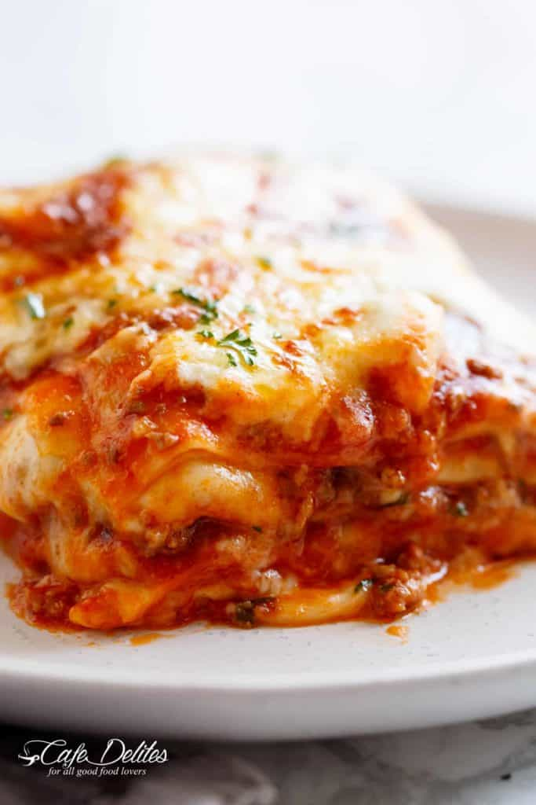

The BEST lasagna is here!
The ultimate comfort food = homemade lasagna.
Family and friends gather around the dinner table at any time for this lasagna recipe.
A big warm comforting hug within layers of pasta, tomato sauce, white sauce and melted cheese!
My mama’s famous lasagna recipe is hands down the best lasagna I have ever had in my life. She learnt her ways from her Italian friends when she lived in New York City, adjusting the recipe through the years to perfect it…and every single person that tries her recipe comes back for seconds, thirds and leftovers for the next day!
This recipe is not exactly ideal to look at and salivate over in a time that we are all on our low carb, Keto, paleo, weight watchers, cabbage soup, low fat, low carb, rabbit food diets. But…It’s Lasagna. And I DO know that many of us still have to cook ‘normal’ foods for our families.

MEAT SAUCE
WHITE SAUCE (BECHAMEL)
LASAGNA

Instructions
Meat Sauce
Parmesan White Sauce
To Assemble
